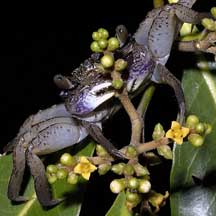
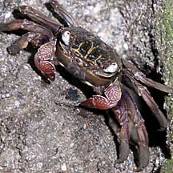
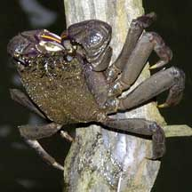
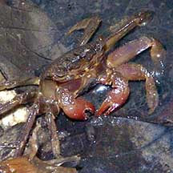
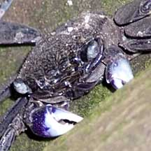
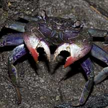

|
|
| crabs text index | photo index |
| Phylum Arthropoda > Subphylum Crustacea > Class Malacostraca > Order Decapoda > Brachyurans > Family Sesarmidae |
| Tree
climbing crab Episesarma sp. Family Sesarmidae updated Dec 2019 Where seen? This crab with a flat, squarish body and flat pointed legs is commonly seen in our mangroves. Our mangrove trees are often full of crabs! Features: Body width 4-5cm. Body flat and squarish, legs flat with pointed tips. Pincers may be colourful. The sides of the body have a structure with a net-like pattern that help recirculate and oxygenate water in the gill chambers. In this way, these crabs can breathe air and stay out of the water for some time. |
|
 About to munch on flowers? Sungei Buloh Wetland Reserve, Sep 03 |
 Kranji Nature Trail, Dec 10 |
 Sungei Buloh Wetland Reserve, Dec 03 |
| Many are burrowers, digging holes at the base of mangrove trees and
in mud lobster mounds. At high tide during the day, tree-climbing
varieties are often seen clinging to tree trunks just above the water
line. Here they remain motionless. They probably do this to avoid
both aquatic predators in the water, as well as airborne predators
such as birds. Some of the Episesarma species seen in Singapore can be distinguished by the colour of their pincers. |
|
 Singapore tree climbing crab (Episesarma singaporense) has all red pincers. |
 Violet tree climbing crab (Episesarma versicolor) has purple-white pincers. |
 Pink tree climbing crab (Episesarma chentongense) has red-white pincers. |
| What does it eat? It eats mainly
leaves, gathering these at night from the ground or by climbing up
trees. These crabs have been observed as high as 6m up in trees. It
may also scavenge any dead animals that it comes across. They may even eat other tree climbing crabs. Human uses: The Teochew pickle these crabs in black sauce with vinegar and eat them with porridge. The Thais eat them salted with the roe or fried whole. They are considered pests in mangrove plantations because they attack mangrove seedlings. |
| Tree climbing crabs on Singapore shores |
On wildsingapore
flickr
|
| Other sightings on Singapore shores |
| Episesarma
species recorded for Singapore from Wee Y.C. and Peter K. L. Ng. 1994. A First Look at Biodiversity in Singapore ^Lee B. Y., Ng N. K. & P. K. L. Ng. The taxonomy of five species of Episesarma De Man, 1895 in Singapore (Crustacea: Decapoda: Brachyura: Sesarmidae). in red are those listed among the threatened animals of Singapore from Davison, G.W. H. and P. K. L. Ng and Ho Hua Chew, 2008. The Singapore Red Data Book: Threatened plants and animals of Singapore. **from WORMS
|
Links
|